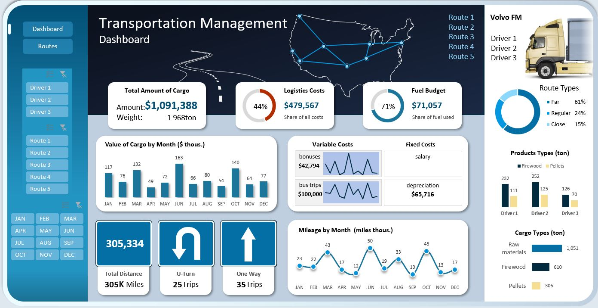
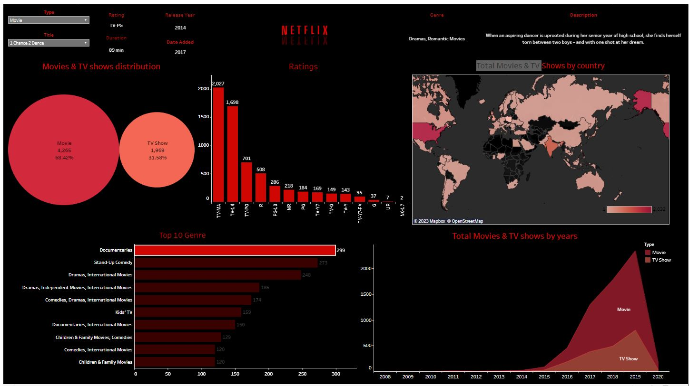
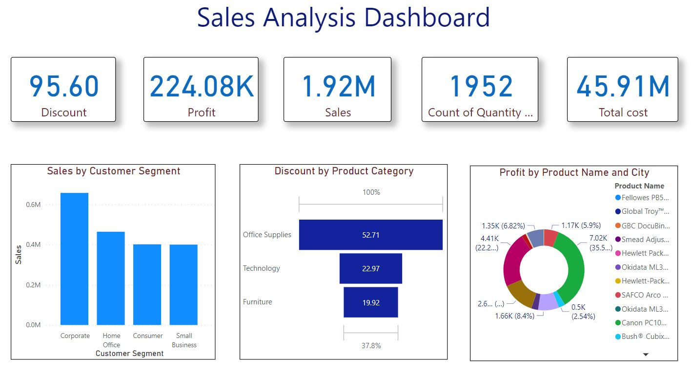
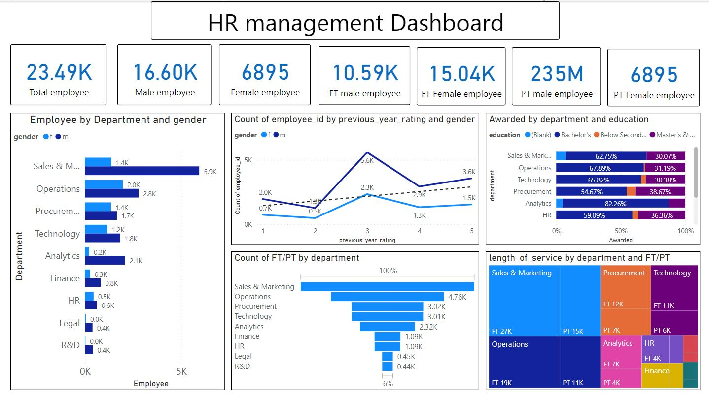
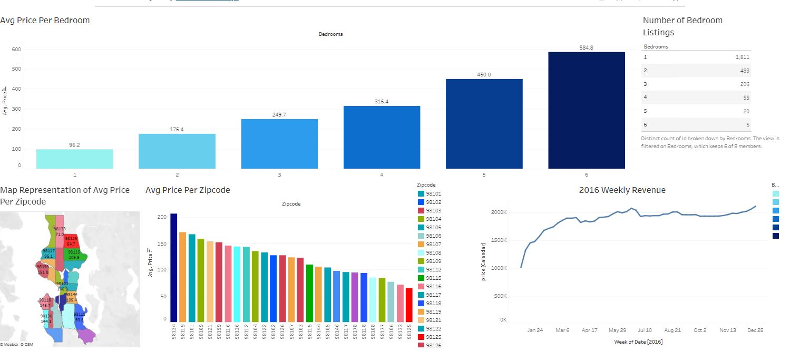

Logistics is now a key factor in influencing the final cost of goods to the consumer. The role of logistics in business is difficult to overestimate. The visualization of data on the functioning of logistics supply chains greatly simplifies the work for all employees. From rank-and-file drivers to the entire department of a corporation's top managers.

In this project, I carried out EDA of restaurant sales by using SQL to answer the following questions;
1. Total orders?
2. Total Unit sold
3. Average delivery time?
4. Average rating for food?
5. Restaurant with the most orders?
6. Payment mode used most by customers?
7. Time of the day did customers order the most?

The Call Center Dashboard in Excel is a project that aims to provide a comprehensive overview of a call centre's performance. The dashboard is designed to display key metrics such as call volume, call duration, wait times, and customer satisfaction ratings in a visually appealing and easy-to-understand format. This tool can be used by call centre managers and supervisors to monitor performance, identify trends, and make informed decisions about staffing, training, and other operational improvements. With its intuitive interface and real-time data updates, the Call Center Dashboard in Excel can help improve customer service and increase efficiency within the call centre.

In this project, I analyzed a number of movies and TV shows added on Netflix using Tableau and created a dashboard that shows key insights on movies and TV shows by region, and time.

The sales analysis dashboard shows the revenue coming from different customer segments. It displays the profit and unit sold in each of the active regions and the value of discounts offered.

The HR management Dashboard in Power bi is used to track the HR team by analyzing, visualizing data, and take a decision to have a positive impact on the organization. This dashboard can be used to reach the objectives of improving performance management to boosting employee satisfaction.

The goal of this project was to conduct a market research to guide the investment decisions of a potential Airbnb owner. In this project, I used Tableau to compare the prices of various types of Airbnb against the size, location and, highest demand time frame.